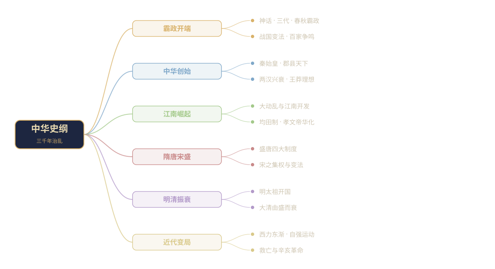

中华史纲
〇 · 书籍信息
基本信息
| 书名 | 《中华史纲》 |
|---|---|
| 作者 | 李定一，史学家，四川铜梁人。自序作于 1986 年，云「三十余年前曾立下宏愿，希望能撰写一本一般人可以阅读而且愿意读下去的中国史书」，晚年「抱定入地狱的心情撰写此书」 |
| 出版 | 电子版约 46 万字，六编二十二章，自远古叙至辛亥革命；纸质版出版信息以实体书为准 |
| 体裁 | 通史纲要。「纲」是纲要——作者自订四项叙史原则（融古籍为现代文体 / 按时间次序叙因果 / 只写「今日所需要知道的过去」 / 篇幅简得其当），并首创以「中华世界」为全书主轴 |
| 一句话 | 一部以「文化而非血统」定义中国、以「制度」解释盛世、以「史料过滤」重新为秦始皇王莽隋炀帝翻案的通史——读它是为了在历史的一治一乱里，看清制度与人心的因果链。 |
一 · 核心主题总览
全书六编散而不乱，底层只讲六组概念。抓住它们，三千年的治乱就能压成一张纸：
① 中华世界体系（全书主轴）
作者自序杜撰 「中华世界」 一词：因中国文籍中的「天下」与今人「世界」同义。其定义标准是文化而非血统——「夷狄入于中国，则中国之」；四周民族接受中华文化者即为「中国」，服从者成藩属，中国「招携以礼，怀远以德」。这与西方以国界、主权定义国家的观念是两套世界体系，理解了它才能理解朝贡、鸦片战争前后双方「鸡同鸭讲」的深层原因。
② 叙史方法论（怎么读史）
「一切历史都是当代史」——史家都按现代人的眼光选择史事。因此作者立下过滤原则：许多记叙都要经过过滤透视，才能比较接近事实。最激进的实操是废除年号：一千五百多年间六百七十一个纪年单位「实在可怕」，全书改用「汉武帝二十二年（前119）」式帝王纪年附公元，这项 废除年号 的改革是「历史数据标准化」的先声。这是一套把历史「清洗成结构化数据」的方法论。
③ 制度为盛世之本
「唐代隆盛的原因，可于其制度之健全合理中求得答案」——租庸调、府兵、三省、科举四大柱石；往前追是北魏均田制与三长制，往后坏于募兵、冗官、养廉。盛世不是明君的个人美德，而是制度谱系的复利；衰世也不是昏君的偶然失德，而是制度赘疣的必然爆雷。
④ 治乱周期与农民的资产负债表
「中国农民的三大敌人：兵祸、天灾、剥削」——三者叠加即是王朝系统性风险的集中爆发点。「土地兼并→流民→民变→兵祸→人口锐减→再分配」的循环，是全书反复出现的宏观周期；作者称之为「在历史的一治一乱中中国农民命运的循环」。
⑤ 历史定价的幸存者偏差
秦始皇、隋炀帝、王莽——三个功盖万世却被丑化的人。作者给出的解释冰冷而精确：他们国祚短促、没有孝子贤孙长期豢养文人去颂扬其祖先，留下的话语权全归了敌对方。「兴创两大工程，嘉惠后世最为深远的伟大人物，都被他们以后的皇帝们嗾使的文人所诬蔑与丑化了。」这是一堂关于「谁在记录数据」的公开课。
⑥ 中西交流中断的国运拐点
明末清初是「中西文化交流的极盛时期」：利玛窦、汤若望、徐光启合译《几何原本》，中国的理性思想反向启迪欧洲启蒙运动。但雍正元年（1723）禁教之后交流中断百年——作者断言：「中西文化交流中断后的发展，是 19 世纪中叶以后中国遭受无穷灾难的根源」。开放窗口一旦关闭，代价要用国运支付。
二 · 第一编 中华民族文化形成时期—— 蒙昧 · 三代 · 春秋战国 ——
1 · 神话、三代与霸政
本编从「先民心目中的历史」讲起：神话是先民的史料而非我们的信史。三代（夏商周）是「历史的肇始」；西周封建奠定宗法秩序。平王东迁后王纲解纽，霸政登上舞台——齐桓晋文以「尊王攘夷」重组国际秩序，霸主实质是周天子的权力代理。各国在争霸压力下陆续变革，从「各国的变化」到战国的彻底变法，五百年间完成了从贵族政治向官僚国家的转型。
2 · 战国变法与百家争鸣
战国两百余年残酷斗争后只剩齐楚秦三雄，而有抱负的人「多将目光集中在西陲的秦国」——自商鞅变法后，秦以君主集权的法治国家形态脱颖而出。本编末两节落在中国文化的精神底座：孔子开创民间讲学，打破「学在官府」；诸子百家「百花齐放」，而各家虽众说纷纭，却有一共识——「不赞赏分裂与战争，主张天下一统才能纾解生民的疾苦」。「他们之间，只在达到目标的手段上有差异，鹄的则相同。」统一是先秦思想的公约数，秦只是执行者。
三 · 第二编 中华世界之创始与发展—— 秦汉三国与魏晋（前221—317）——
1 · 秦始皇与中华世界的创始
作者给秦始皇的定位极高：「说秦始皇是中华民族和中国历史的创造者，绝非过分。」其积极政策两条主线：废封建、置郡县——面对「又复立国，是树兵也」的四十字廷议，郡县制终结了世袭贵族统治；三同政策（书同文、车同轨、行同伦）——以小篆统一文字、以驰道贯通天下、以刻石整齐人伦，其中文字统一使中国文化得以顺利传播发扬，堪比欧洲拉丁文与各国文字的分野。消极政策则是收兵铸金人、毁堤防夷要塞，「这一切都为了弭兵，为了和平」。
至于千古骂名，作者逐一翻案：当时人恨秦，一是「各国民族主义在作祟」（亡国之恨难消），二是秦法彻底、天下骤然不适，三是徭役过重「过分使用民力」；后世骂秦，则是因秦「享国仅十五年而亡，并无孝子贤孙长久促使无耻的文人去颂扬其祖先」。焚书令的真相比传说温和得多——「博士官所职」之书不焚、医药卜筮种树之书不去，「坑」的按《史记》《汉书》儒林传所记是术士而非儒生。「大家只感到『暴秦』的压力，却忘记了战争的灾难！」而秦最深远的影响反而是负资产：「为后世树立了一个行法治便享国不久的恶劣先例，使得中国政治长久厉行人治。」
2 · 两汉兴衰与王莽的失败
文景之治被作者冷峻解剖：轻徭薄赋得利者是地主而非农民，「衣牛马之衣，而食犬彘之食」才是底层实况——名义税率与真实体感的背离是全书反复出现的主题。武帝兴革、王莽登场：王莽扩充太学、妇女非自身犯法不受株连、以「上书」四十八万七千余人作为受禅依据——作者称他「要用上书（选票）人数的多少作为取得政权的途径」。其经济改革（王田制、六筦、五均赊贷）方向正确，「所任非人」与「食古不化」才是败因：富商摇身变经济官，再与地方官通奸造假账，「百姓愈病」。货币改革一次发行二十八种货币，直接把经济搞乱。
作者对王莽的结论是全书最沉痛的段落之一：「随着王莽死亡的不仅是一个个人，而且是一个理想」——和平禅让、民心即天意的理想从此死了两千年，因为后世皇帝视「禅让论」为皇权死敌，「以司马光之贤，尚且如此畏缩」。并引钱穆语作结：「这不是王莽个人的失败，是中国史演进过程中的一个大失败。」
3 · 中华文化概述（秦汉卷）
第九章是全书的方法论自足样本：以农业为文化发展的基本因素，逐层展开农具牛耕、水利屯田、土地赋税，再及工商业（铜与黄金的产能、纺织、蔡伦造纸、丝绸之路）、学术科技（《史记》「究天人之际，通古今之变，成一家之言」、张衡浑天仪地动仪）。作者从《汉书·食货志》替汉代五口之家算了一笔账：岁收百五十石，纳税十五石，衣食祭祀之余「不足四百五十」钱，一遇疾病死丧即负债卖地——这是两千年前的家庭现金流量表。
四 · 第三编 新陈代谢时期—— 五胡乱华与南北朝（317—589）——
1 · 大动乱与江南开发
「五胡乱华」不是蛮族单方面的灾难，而是中华文化的压力测试：西晋边境情势失控，匈奴、羌氐相继称雄，中原人口从五千余万锐减至三千余万。与此同时东晋南渡把中原文化整体移植江南，「新天地中的旧文化」在开发中孕育繁荣——中华世界第一次靠空间换时间完成文化备份。
2 · 均田制与孝文帝的华化
北魏太武帝统一北方后「一心一意整顿农耕」，是中国历史发展的枢纽。孝文帝采纳李安世之议推行均田制：露田十五岁授、身没归还，桑田世业可传子孙——「这个自孟子、王莽以来的儒家理想终于得以实现，而且推行了两百余年」，配套的三长制清理出十余万荫户，把被豪强藏匿的人口重新纳入户籍。孝文帝迁都洛阳后的全盘华化（禁鲜卑语、改汉姓、胡汉通婚）被作者归因于一个惊人的细节：他是被「与鲜卑有世仇、有志匡复华夏文物的中原世家后裔」（冯太后）教育养大的鲜卑皇帝——教育塑造了统治者的文明选择。迁都诏下，「人死葬河南，不得还北」——一个新纪元由是开始。
五 · 第四编 中华文化之定型—— 隋唐与两宋（589—1279）——
1 · 隋的统一与盛唐四大制度
隋文帝「节俭勤政、休养生息」二十四年，为唐代盛世奠定基础——却同样因为「没有子孙长期豢养文人去歌颂他的功德，所以他显赫的历史地位隐晦不彰」。隋炀帝开凿大运河「是中国交通上的大革命」，克服了「长江以限南北」的文化经济分裂，「大运河是人类历史上最伟大的工程之一……可与长城媲美」，但三次征高句丽暴露的「缺乏理性」才是亡国主因。唐承其弊而收其利：唐初四大制度——租庸调（田租户调身役负担均分）、府兵（兵散于府将归于朝，无人拥兵自重）、三省（草拟审查执行三权分立、封驳制衡）、科举（任何人均可投牒自进的客观选拔）——「是唐代辉煌文化的四大柱石」，其中科举制「是中华历史文化中最突出的创发」。作者并校勘玄武门叙事：实录经许敬宗删改，「涂改历史总会出现漏洞」，新旧唐书互校即可发现纰漏。
2 · 宋之集权与变法图强
宋太祖针对两百年藩镇积弊开出中央集权药方：杯酒释兵权、更戍法「兵无常帅，帅无常师」、知州知县通判监州、财赋悉运中央——军阀之祸根除，代价是「地方无权无财……尸位素餐」。财政上则自我强化成死结：禁兵从开国不足二十万膨胀到一百二十五万九千，「养兵之费约五千万缗」占岁入六分之五，「生民之力弊于兵，天下之势屈于兵」；冗官同理，「冗兵耗于下，冗吏耗于上」。于是有范仲淹十事疏与王安石变法（三司条例司、方田均税、免役、青苗、均输、市易、保甲、保马、军器监、三舍、三经新义）。作者的判词极公允：「新法确为针砭时弊的对症良策」，败在执行层——「若不得其人，由奸猾之吏执行……民未得其利，反受其害」；也败在主事者性格——「王安石有崇高的理想和卓越的识见，但缺少将理想付诸实现的才能与气度」。神宗死、司马光尽废新法，此后新旧党反复报复，终至蔡京立「元祐党籍碑」——制度之争沦为人身清洗。
六 · 第五编 中华文化之发展—— 元明清之长期统一（1279—1842）——
1 · 明太祖开国与大清帝国
明太祖成功三因：流浪三年熟悉江淮人情（对地形的尽调）、礼贤下士结纳知识分子（李善长「知人善任，不嗜杀人」之教、朱升「高筑墙，广积粮，缓称王」）、多行仁良（赵翼「明祖以不嗜杀得天下」）。其制度建设影响五百年：废宰相开君主独裁（1380—1911 共五百三十一年）、卫所制兵农合一（「吾养兵百万，不费百姓一粒米」）、黄册鱼鳞册两本国家台账、八股取士定型科举。清代康熙以「三藩、治河、漕运」三事书于宫柱、密建储位法开制度新篇；雍正以火耗归公＋养廉银解决「官吏非贪污不足以养妻子」的制度性腐败，设军机处把君主独裁推到极限。
2 · 由盛而衰与中西交流的中断
清衰的三重病灶：和珅贪赃八亿两银（相当于全国岁入十一倍余）上行下效；秘密会党凝聚反清力量；最致命的是八旗生计——旗人「不农、不工、不商」，完全由政府供养，「这个制度是清的赘疣，与之共存亡」。同期的中西交流一节是全书思想密度最高处：明末清初传教士以科学取信中国，中国理性思想西传反哺欧洲启蒙（「中国文化之传入是其原因之一」）；雍正禁教后，「中国人更加不了解西方的一切」，双方只剩「畸形的关系」——嘉庆敕谕英王「天朝不宝远物」「嗣后无庸遣使远来」，而欧洲人的中国认知也退化为马可·波罗式传说。两个互相不了解的世界相遇时，冲突只是时间问题。
七 · 第六编 中华世界的没落—— 从鸦片战争到辛亥革命（1842—1911）——
1 · 西力东渐与自强运动
鸦片走私→鸦片战争→不平等条约，天朝体系在炮口下解体。自强运动（师夷长技）三十余年「居然使这个古老陈腐的大帝国在三十余年中装饰得焕然一新」，但其阻碍写得入木三分：明面上是清议——倭仁「立国之道，尚礼义不尚权谋；根本之图，在人心不在技艺」，徐桐「宁可亡国，不可变法」，郭嵩焘著《使西纪程》被全国攻讦毁版；李鸿章自陈「天下事无一不误于互相牵制，遂致一事办不成」。暗地里是主持者自身的知识边界：曾、李、左的世界知识仅及船炮，「他们对于西方政治、法律、教育等各方面的知识，都茫无所知」。唯有郭嵩焘看穿本末——「西洋立国，自有本末」「岂有百姓困穷，而国家自求富强之理！」——却在当时「没有一个同志」。
2 · 救亡与辛亥革命
百日维新、义和团接连失败后，革命成为「仁人志士」的公约数。孙中山的与众不同在于教育履历：中西学识双基，从未「为八股以博科名」；其上书李鸿章的名言——「欧洲富强之本，不尽在于船坚炮利、垒固兵强，而在人能尽其才，地能尽其利，物能尽其用，货能畅其流」——被拒后始决意革命。革命难在组织：华侨保守、会党复杂、留学生意见分歧、组织不健全，四次失败原因被作者逐条归档。武昌首义「乃成于意外」，而民国初年的顿挫更见史识：黄兴解散革命军、宋教仁「毁党造党」，皆因党人「误把排满当作目的」——孙中山反复申明「革命之宗旨，不专在排满」，并提出建国三程序（军法之治→约法之治→宪法之治），却被讥为「理想太高」。宋案之后，国民革命「得再从头做起」。
八 · 名段欣赏—— 原文精读 · 逐段赏析 ——
九 · 金句摘录—— 47 条 · 带出处 ——
"读历史的主要目的之一是理解史事的因果关系，或许可以从中获取些许经验。"—— 自序
"写历史不怕篇幅长……问题在于如何简，更重要的在于『简得其当』。"—— 自序
"『中国』亦可当作地名解释，『中华』则含有历史文化传统之意。"—— 自序
"随意更改年号是读中国历史的极大障碍。"—— 自序
"不赞赏分裂与战争，主张天下一统才能纾解生民的疾苦……只在达到目标的手段上有差异，鹄的则相同。"—— 第二编 · 第五章「中华世界」的创始
"天下共苦，战斗不休，以有侯王。赖宗庙，天下初定，又复立国，是树兵也。"—— 第二编 · 秦始皇时代（引秦始皇廷议）
"这四十个字，将秦始皇对历史了解之深刻……以及以天下为公的胸襟，全部道出。"—— 第二编 · 秦始皇时代
"文字统一使中国文化得以顺利传播发扬。"—— 第二编 · 秦始皇时代
"大家只感到『暴秦』的压力，却忘记了战争的灾难！"—— 第二编 · 对秦始皇的评论
"许多记叙都要经过过滤透视，才能比较接近事实。"—— 第二编 · 对秦始皇的评论
"坑的不是『儒』，而是术士。"—— 第二编 · 对秦始皇的评论
"他为后世树立了一个行法治便享国不久的恶劣先例，使得中国政治长久厉行人治。"—— 第二编 · 对秦始皇的评论
"教育是立国之本，教育才是达到人类争取真正平等的唯一途径。"—— 第二编 · 王莽时代
"人心向背，是『天人合一』政治哲理的根本。"—— 第二编 · 王莽时代
"随着王莽死亡的不仅是一个个人，而且是一个理想。"—— 第二编 · 王莽时代：一个理想的破灭
"这不是王莽个人的失败，是中国史演进过程中的一个大失败。"—— 第二编 · 王莽时代（引钱穆《国史大纲》）
"中国农民的三大敌人：兵祸、天灾、剥削。其中以兵祸最为可怕。"—— 第二编 · 第九章 中华文化概述
"野心家多不是农民，只是利用农民之人。"—— 第二编 · 第九章 中华文化概述
"今法律贱商人，商人已富贵矣；尊农夫，农夫已贫贱矣。"—— 第二编 · 第九章 中华文化概述（引晁错）
"司马迁可以被尊为『中国史学之父』。"—— 第二编 · 第九章 中华文化概述
"这个自孟子、王莽以来的儒家理想终于得以实现，而且推行了两百余年。"—— 第三编 · 孝文帝的华化（均田制）
"一个新纪元由是开始。"—— 第三编 · 孝文帝的华化（迁都洛阳）
"评述胡太后、武则天或慈禧太后等历史人物，应凭其施政以臧否之……如此观点才公平。"—— 第三编 · 中原的分裂
"大运河是人类历史上最伟大的工程之一……可与长城媲美。"—— 第四编 · 隋炀帝
"缺乏理性是他身死国灭、为天下笑的致命伤。"—— 第四编 · 隋炀帝
"商旅野次，无复盗贼，囹圄常空，马牛布野，外户不闭。"—— 第四编 · 唐初的政局（引《贞观政要》）
"唐代隆盛的原因，可于其制度之健全合理中求得答案。"—— 第四编 · 唐初的政局
"租庸调制、府兵制、三省制与科举制，是唐代辉煌文化的四大柱石。"—— 第四编 · 唐初的政局
"科举制是中华历史文化中最突出的创发。"—— 第四编 · 唐初的政局
"贞观之治与文景之治完全有别……放弃育民的责任而『无为』，从政治的立场上看，他们是不负责任的；从人道的观点来看，他们是残忍的。"—— 第四编 · 唐初的政局
"涂改历史总会出现漏洞……此足为后世任意删改伪造历史者诫。"—— 第四编 · 唐初的政局
"生民之力弊于兵，天下之势屈于兵。"—— 第四编 · 宋代开国的政策
"冗兵耗于下，冗吏耗于上。"—— 第四编 · 变法图强
"新法确为针砭时弊的对症良策……民未得其利，反受其害。"—— 第四编 · 变法图强
"王安石有崇高的理想和卓越的识见，但缺少将理想付诸实现的才能与气度。"—— 第四编 · 变法图强
"吾养兵百万，不费百姓一粒米。"—— 第五编 · 明太祖的开国政策（引明太祖）
"高筑墙，广积粮，缓称王。"—— 第五编 · 明太祖的开国政策（引朱升）
"八旗制度规定旗人『不农、不工、不商』，完全由政府供养……这个制度是清的赘疣，与之共存亡。"—— 第五编 · 由盛而衰之历程
"中西文化交流中断后的发展，是19世纪中叶以后中国遭受无穷灾难的根源。"—— 第五编 · 中西文化交流
"根本之图，在人心不在技艺。"—— 第六编 · 自强运动的阻碍（引倭仁）
"宁可亡国，不可变法。"—— 第六编 · 自强运动的阻碍（引徐桐）
"天下事无一不误于互相牵制，遂致一事办不成。"—— 第六编 · 自强运动的阻碍（引李鸿章）
"西洋立国，自有本末。"—— 第六编 · 自强运动的阻碍（引郭嵩焘）
"岂有百姓困穷，而国家自求富强之理！"—— 第六编 · 自强运动的阻碍（引郭嵩焘）
"欧洲富强之本，不尽在于船坚炮利、垒固兵强，而在人能尽其才，地能尽其利，物能尽其用，货能畅其流。"—— 第六编 · 辛亥革命（引孙中山）
"革命之宗旨，不专在排满。"—— 第六编 · 国民革命之顿挫（引孙中山）
"身退诚有之，功成则未也。"—— 第六编 · 国民革命之顿挫（引孙中山）
十 · 拓展阅读—— 佐证 · 延伸 · 视频与词条 ——
作者与本书
- 《中华史纲》· 百度百科 —— 本书词条与作者生平
- 李定一 · 百度百科 —— 史学家李定一生平著述
- 《中华史纲》· 豆瓣书讯 —— 评分与书评
- 《中华史纲》· 维基百科 —— 版本源流
核心议题词条
- 郡县制 · 百度百科 —— 「废封建置郡县」的制度原型
- 均田制 · 百度百科 —— 北魏孝文帝的儒家理想落地
- 租庸调制 · 百度百科 —— 唐四大制度柱石之一
- 科举制 · 百度百科 —— 「中华历史文化中最突出的创发」
- 王安石变法 · 百度百科 —— 与本书「变法图强」节互证
- 利玛窦 · 百度百科 —— 中西文化交流极盛时期的枢纽人物
- 辛亥革命 · 百度百科 —— 第六编终点
影像与讨论
- 《中国通史》纪录片 · B站检索 —— 配合本书六编观看影像版
- 知乎 · 本书相关讨论 —— 读者评价与延伸书单
- 知乎 · 《国史大纲》相关讨论 —— 与钱穆通史观对照阅读
十一 · 个人感悟与心得—— 读史明危 · 四点心得 ——
读通史：四点心得
其一，历史评价的「记录者偏差」，是所有跟数据打交道的人的老熟人。作者翻案秦皇隋炀的核心逻辑只有一条：他们国祚短促，「没有孝子贤孙长期豢养文人去颂扬其祖先」，话语权全在敌对方手里——所以「许多记叙都要经过过滤透视，才能比较接近事实」。这不就是数据分析里最经典的数据生成过程问题吗？谁记录数据，立场就天然偏向谁——赔付数据由赔付方记录，分析立场偏向记录环节；渠道数据由渠道自己记录。拿到任何一份「历史数据」，第一问永远是：这份记录是谁写的，他有什么动机，缺失了哪些没被写下来的部分。史书要过滤透视，报表同样要。
其二，一部王朝史就是一部压力测试史——农民三大敌人就是三因子模型。兵祸、天灾、剥削，作者指出三者同时出现时便是系统性崩溃的时点，且「野心家多不是农民，只是利用农民之人」。把这个三因子模型套到任何机构身上：外部冲击（天灾）、内部消耗（剥削性的组织摩擦）、突发尾部事件（兵祸）——单因子都能扛，叠加才是危机。更扎心的是文景之治那笔账：田赋三十税一，名义税率轻到极点，农民却「衣牛马之衣」——名义指标与真实体感的背离，正是我们在做客户分层、评估产品适销性时最容易忽略的偏差。看综合成本率，更要看终端客户拿到手的是什么。
其三，制度是复利，赘疣也是复利。全书最强的解释框架是制度谱系：均田→租庸调→府兵→三省→科举，一套制度接力两百年做出贞观开元；而八旗「不农、不工、不商，完全由政府供养」，作者断言「是清的赘疣，与之共存亡」——一项制度性福利养出一群系统性风险承担者，最后与王朝同归于尽。对任何组织的启示具体到可落地：每年把自己的制度清单过一遍，问两个问题——哪些制度是「租庸调」（在产生复利），哪些是「八旗」（在消耗复利）？ 王安石的教训要并排记住：方向对、方案好，败在「所任非人」与主事者气度——变革的瓶颈从来不是方案，是执行的人，推任何新制度先配人再发文。
其四，知识通道的中断，以灾难的形式结算。明末清初是中西交流的极盛期，雍正一纸禁教令关闭通道百年，作者的判词是「19 世纪中叶以后中国遭受无穷灾难的根源」。这是全书对我个人最直接的警示：信息输入的通道一旦贪图省力而关闭，代价不会立刻出现，会在某个时点一次性结算。落到动作上就三件：保持读硬书（仙书阁每季度至少上架一部）、保持写出来（公众号与知识星球是输出倒逼输入的机制）、保持教别人（给团队讲一遍胜过自己读三遍）。郭嵩焘的悲剧是「没有一个同志」——找得到同路人，通道才关不上的，这大概也是知识星球存在的意义。
一句话收束：三千年的治乱卷起来只有两个词——制度与记录。制度决定兴衰的斜率，记录决定后人看到的曲线。读史是为了校准自己的两个习惯：建制度时想十年后的复利方向，看数据时先问记录者的立场。以史为纲，以数为尺。
十二 · 一页速查（复习用）
| 全书框架 | 六编：①文化形成（远古—前221）→ ②中华世界创始与发展（前221—317）→ ③新陈代谢（317—589）→ ④文化定型（589—1279）→ ⑤元明清长期统一（1279—1842）→ ⑥没落（1842—1911） |
|---|---|
| 中华世界 | 以文化而非血统定义中国：「夷狄入于中国，则中国之」；藩属体系 vs 西方主权国家体系——两大世界观的错位贯穿第六编 |
| 叙史四原则 | 融古籍为现代文体／按时间叙因果／只写「今日所需要知道的过去」／简得其当；实操：废年号（671 个年号改帝王纪年附公元） |
| 秦之遗产 | 废封建置郡县 + 三同政策（书同文车同轨行同伦）；焚书实为限「以古非今」、坑的是术士；负面遗产：行法治即亡国的先例 → 两千年人治 |
| 王莽理想 | 王田制（土地国有禁止买卖）+ 六筦五均（平价收放、赊贷无息）；败因：所任非人 + 食古不化 + 货币二十八种；理想随其死亡而终结两千年 |
| 农民三敌 | 兵祸（最可怕）／天灾／剥削——三敌叠加即王朝系统性崩溃；野心家利用农民而非农民起事；一治一乱的命运循环 |
| 制度谱系 | 均田制（485，行两百年）→ 三长制 → 租庸调 → 府兵制 → 三省制（草拟·审查·执行+封驳）→ 科举制（隋炀帝始创）；募兵+冗官+养廉银是转折点 |
| 清衰三因 | 和珅贪赃（八亿两 ≈ 岁入 11 倍）／会党反清／八旗赘疣（不农不工不商，政府供养）——乾隆晚年已「千疮百孔」 |
| 中西交流 | 明末清初极盛（利玛窦·徐光启·几何原本·皇舆全览图）→ 雍正元年禁教中断 → 「近百年来灾难的根源」；反向输出：中国理性思想助产欧洲启蒙 |
| 自强运动 | 明阻碍：清议（倭仁·徐桐·李慈铭）；真瓶颈：主持者知识边界仅及船炮；先知郭嵩焘「西洋立国自有本末」而无一个同志 |
| 辛亥革命 | 孙中山双基教育 + 「人能尽其才，地能尽其利，物能尽其用，货能畅其流」；四难（华侨·会党·留学生·组织）；建国三程序：军法→约法→宪法之治 |
| 一句话总结 | 制度决定兴衰的斜率，记录决定后人看到的曲线；以史为纲，以数为尺。 |
十三 · 全书思维导图—— 一图纵览 ——

一图纵览全书骨架 · 手机端可左右滑动查看全图